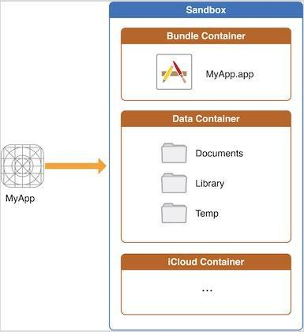

iOS应用文件目录
出于安全考虑，当一款应用安装在设备上后，系统会创建一些系统目录给应用使用，一款应用只有权限访问其自己的路径下的数据（即沙盒机制）。iOS系统的沙盒机制规定每个应用都只能访问当前沙盒目录下面的文件（也有例外，比如在用户授权情况下访问通讯录，相册等）。在开发中常常需要数据存储的功能，比如存取文件，归档解档等。
沙盒目录结构
每个APP的沙盒下面都有相似目录结构：

上面的代码得到的是应用程序目录的路径，在该目录下有三个文件夹：Documents、Library、temp以及一个.app包！该目录下就是应用程序的沙盒，应用程序只能访问该目录下的文件夹！！！
AppName.app
整个应用的bundle文件。此目录包含整个应用和其所使用到的所有资源。 此路径不能写，只可读，如果强行写入，会改变安装时在系统注册的该目录的签名，如果签名改变，系统会组织程序启动。
Documents/
用于存储用户产生的内容。 此目录会被iTunes默认备份。您应该将所有的应用程序数据文件写入到这个目录下。这个目录用于存储用户数据。
Documents/Inbox
此目录用于保存用于其他应用打开的文件。 例如，Mail应用汇将和此应用有关的附件保存于这个路径。 Documents interaction Controllers 也会放文件于此目录。
自己应用可以读取和删除此目录文件，但是不能创建新文件或者写入已经存在的文件， 如果要对该目录文件进行修改，请将要修改的文件移除到其他目录。
此目录默认被iTunes备份
Library/
此目录用于保存非用户数据文件。 Library下的子目录可以用于保存那些不希望用户看到的数据文件。不要用Library下的目录保存用户数据文件。
这个目录下有两个子目录：
Preferences 目录：包含应用程序的偏好设置文件。您不应该直接创建偏好设置文件，而是应该使用NSUserDefaults类来取得和设置应用程序的偏好.
Caches 目录：用于存放应用程序专用的支持文件，保存应用程序再次启动过程中需要的信息。
可创建子文件夹。可以用来放置您希望被备份但不希望被用户看到的数据。该路径下的文件夹，除Caches以外，都会被iTunes备份。
tmp/
用于那些不需要在每次启动需要持久化的临时文件。保存应用程序再次启动过程中不需要的信息。手动删除那些此路径下不用的临时文件。当应用没有运行时，系统也许会删除此目录下的文件。此目录默认不会被iTunes备份
获取各种文件目录的路径
获取目录路径的方法：
|
|
获取应用程序程序包中资源文件路径的方法：
|
|
NSSearchPathForDirectoriesInDomains方法用于查找目录，返回指定范围内的指定名称的目录的路径集合。有三个参数：
directory NSSearchPathDirectory类型的enum值，表明我们要搜索的目录名称，比如这里用NSDocumentDirectory表明我们要搜索的是Documents目录。如果我们将其换成NSCachesDirectory就表示我们搜索的是Library/Caches目录。
domainMask NSSearchPathDomainMask类型的enum值，指定搜索范围，这里的NSUserDomainMask表示搜索的范围限制于当前应用的沙盒目录。还可以写成NSLocalDomainMask（表示/Library）、NSNetworkDomainMask（表示/Network）等。
expandTilde BOOL值，表示是否展开波浪线~。我们知道在iOS中~的全写形式是/User/userName，该值为YES即表示写成全写形式，为NO就表示直接写成“~”。
该值为NO:Caches目录路径~/Library/Caches
该值为YES:Caches目录路径
/var/mobile/Containers/Data/Application/E7B438D4-0AB3-49D0-9C2C-B84AF67C752B/Library/Caches
应用产生的文件应该放在哪
为了避免iOS设备间同步和备份流程耗时太久，应该对文件归属目录的选择特别注意。
- 将用户数据保存于 Documents/. 用户数据包括那些需要让暴露给用户的文件 — 用户可以创建，删除，编辑的文件。 例如，对于视频和音频应用，用户数据包括用户下载过的文件等。
- 将应用创建的文件保存于Library/Application support/路径下。此目录下，用于保存应用自身使用，不暴露给用户的数据文件。包括数据文件，配置文件，模板文件和版本特定的资源文件等。
- 谨记保存于Documents/ 和 Application support/ 目录下的文件是默认备份的。可以使用[NSURL setResourceValue:forKey:error:]使用NSURLIsExcludeFromBackupKey key. 任何可以被重新下载的文件，一定不要进行备份。
- 将数据缓存数据保存于Library/Caches 目录下。 缓存数据是那些没用该数据，应用也可以正常运行的数据， 但如果有缓存数据，会提高应用的性能。 例如，数据库缓存文件，可以下载的内容等。 注意：系统也许会删除Caches/下的文件，来释放磁盘空间